Bienvenue Sur Medical Education
Epaule douloureuse chronique
Spécialité : traumatologie /
Points importants
-
Souvent difficile voire impossible à réaliser dans le cadre de la traumatologie aiguë pouvant entraîner luxations ou fractures de l’épaule
-
Cependant, dans certains cas, cet examen peut être réalisé sans trop de difficultés pour peu que le traumatisme soit relativement ancien sans fracture ou luxation
Présentation clinique / CIMU
CONTEXTE
-
Circonstances de l’accident
-
Caractères de la douleur
-
Degré d’impotence fonctionnelle, etc.
INSPECTION
-
Patient torse nu (en comparant avec le côté opposé)
-
Recherche :
-
une amyotrophie (deltoïde, fosse sus et sous-épineuse, trapèze)
-
un décollement de l’omoplate (signe la paralysie du grand dentelé)
-
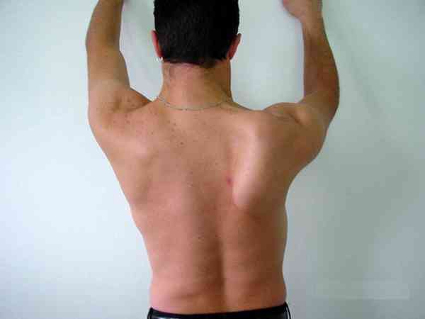
_752
Photo
Décollement de l'omoplate signant la paralysie du grand dentelé (scapula alata)
-
une déformation des articulations acromio-claviculaire et/ou sterno-claviculaire
-
une modification du galbe de l’épaule :
-
comblement du sillon delto-pectoral
-
aplatissement du deltoïde antérieur
-
bombement du deltoïde postérieur, etc.
ETUDE DES MOBILITES PASSIVE ET ACTIVE
-
Sur les 6 mouvements simples de l’épaule, 3 sont indispensables pour établir un diagnostic :
-
l’élévation antérieure ou flexion, qui se mesure avec un goniomètre par rapport à l’axe du tronc
-
la rotation interne (RI) qui se mesure en faisant passer la main dans le dos du patient, et en mesurant la distance entre l’épineuse de C7 et le pouce, ou en notant le niveau de la vertèbre que l’on peut atteindre
-
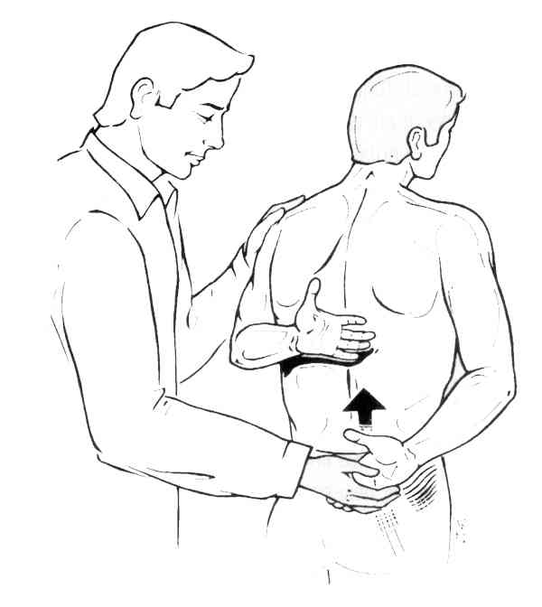
_753
Mesure de la rotation interne de l'épaule
-
la rotation externe coude au corps, dite rotation externe en position 1 (notée RE1)
-
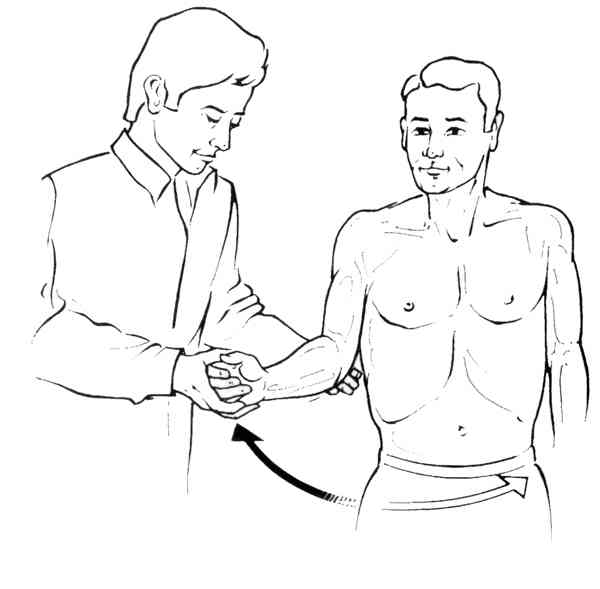
_754
Mesure de la rotation externe en position 1 (RE1)
-
celle-ci, peut aussi se mesurer dans 2 autres positions, RE2 (bras à 90 ° d’abduction) et RE3 (bras à 90° d’élévation antérieure)
-
Une diminution des mobilités passives en RE, RI et en flexion signe une capsulite rétractile ou plus rarement une omarthrose ; le reste de l’examen clinique est alors irréalisable
-
Des mobilités passives normales et une mobilité active diminuée en flexion réalisent le tableau d’épaule pseudo-paralytique ; il s’agit le plus souvent d’un problème de coiffe des rotateurs
-
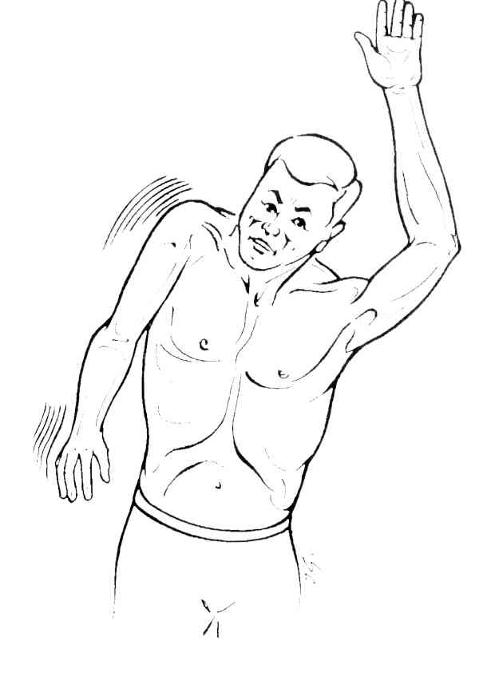
_755
Epaule pseudo-paralytique avec impossibilité d'élever le bras en actif
MANOEUVRES DYNAMIQUES
Présentation clinique / CIMU
CONTEXTE
- Circonstances de l’accident
- Caractères de la douleur
- Degré d’impotence fonctionnelle, etc.
INSPECTION
- Patient torse nu (en comparant avec le côté opposé)
-
Recherche :
- une amyotrophie (deltoïde, fosse sus et sous-épineuse, trapèze)
-
un décollement de l’omoplate (signe la paralysie du grand dentelé)
- 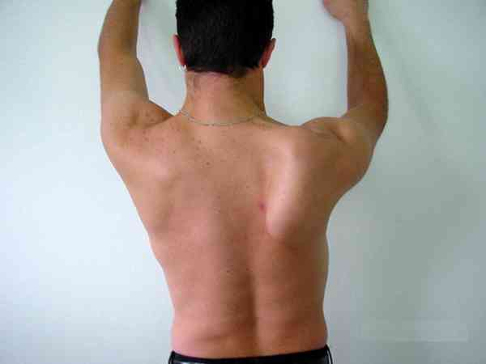 _752 Photo Décollement de l'omoplate signant la paralysie du grand dentelé (scapula alata)
- une déformation des articulations acromio-claviculaire et/ou sterno-claviculaire
-
une modification du galbe de l’épaule :
- comblement du sillon delto-pectoral
- aplatissement du deltoïde antérieur
- bombement du deltoïde postérieur, etc.
ETUDE DES MOBILITES PASSIVE ET ACTIVE
-
Sur les 6 mouvements simples de l’épaule, 3 sont indispensables pour établir un diagnostic :
- l’élévation antérieure ou flexion, qui se mesure avec un goniomètre par rapport à l’axe du tronc
-
la rotation interne (RI) qui se mesure en faisant passer la main dans le dos du patient, et en mesurant la distance entre l’épineuse de C7 et le pouce, ou en notant le niveau de la vertèbre que l’on peut atteindre
- 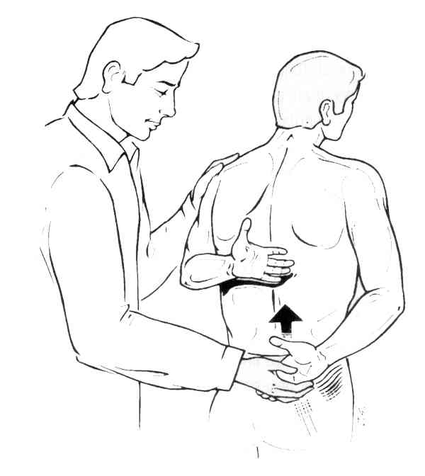 _753 Mesure de la rotation interne de l'épaule
-
la rotation externe coude au corps, dite rotation externe en position 1 (notée RE1)
- 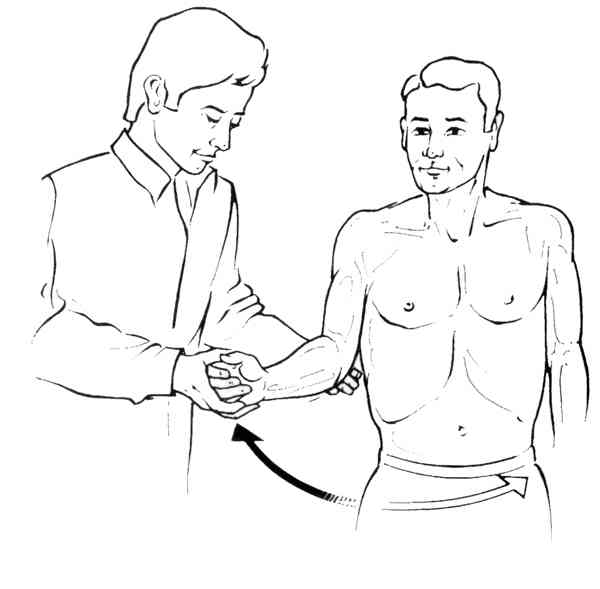 _754 Mesure de la rotation externe en position 1 (RE1)
- celle-ci, peut aussi se mesurer dans 2 autres positions, RE2 (bras à 90 ° d’abduction) et RE3 (bras à 90° d’élévation antérieure)
- Une diminution des mobilités passives en RE, RI et en flexion signe une capsulite rétractile ou plus rarement une omarthrose ; le reste de l’examen clinique est alors irréalisable
-
Des mobilités passives normales et une mobilité active diminuée en flexion réalisent le tableau d’épaule pseudo-paralytique ; il s’agit le plus souvent d’un problème de coiffe des rotateurs
- 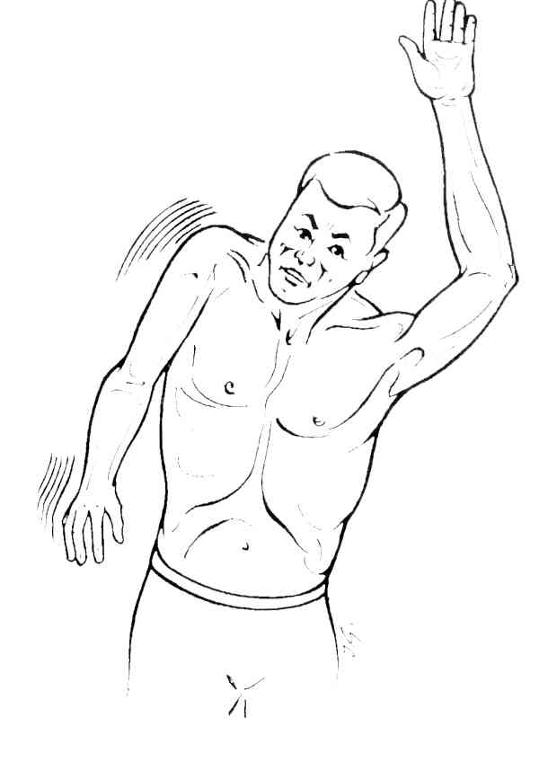 _755 Epaule pseudo-paralytique avec impossibilité d'élever le bras en actif
MANOEUVRES DYNAMIQUES
Recherche d’un conflit sous-acromial
Le conflit sous-acromial correspond à des lésions dégénératives de la coiffe des rotateurs ayant pour origine un conflit répété des tendons de la coiffe avec le bec antéro-inférieur de l’acromion et le ligament acromio-coracoïdien
-
La manœuvre de Neer :
- consiste à effectuer une élévation antérieure passive de l’épaule main en pronation, tout en bloquant la rotation de l’omoplate
- manœuvre positive si la douleur apparaît entre 60 et 120° d’élévation antérieure ; elle disparaît, main en supination
-
La manœuvre de Yocum :
-
se recherche la main du patient posée sur l’épaule opposée, bras à 90° d’élévation antérieure ; on demande au patient de lever le coude au ciel contre résistance
- 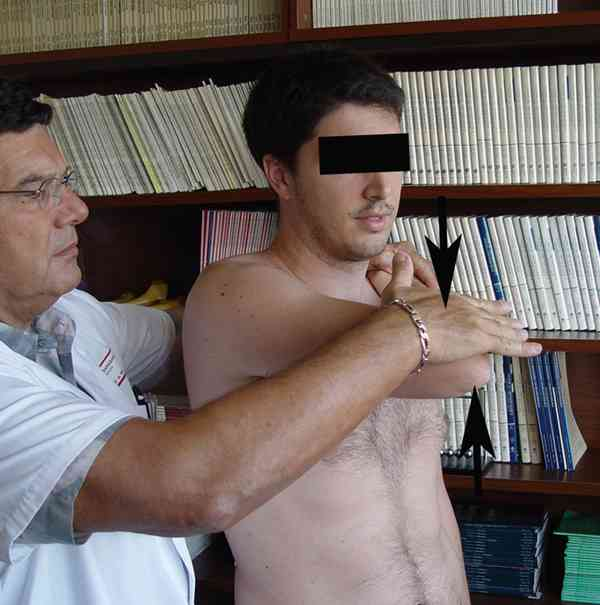 _756 Photo Manoeuvre de Yocum
- le signe est positif si le patient ressent une douleur qu’il reconnaît
-
se recherche la main du patient posée sur l’épaule opposée, bras à 90° d’élévation antérieure ; on demande au patient de lever le coude au ciel contre résistance
-
La manœuvre de Hawkins :
-
se recherche bras à 90° d’élévation antérieure, coude fléchi à 90°, en imprimant un mouvement de rotation interne
- 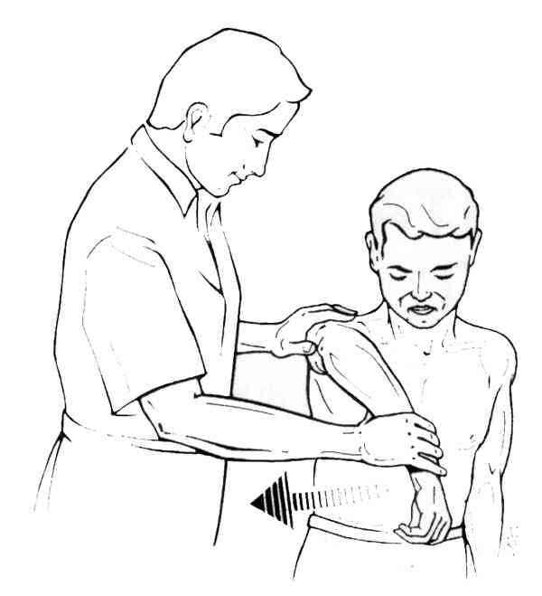 _757 Manoeuvre de Hawkins
- le signe est positif si le patient ressent une douleur qu’il reconnaît
-
se recherche bras à 90° d’élévation antérieure, coude fléchi à 90°, en imprimant un mouvement de rotation interne
Étude des muscles de la coiffe
- La coiffe des rotateurs comprend 4 muscles (supra-épineux, infra-épineux, petit rond, et sub-scapulaire) auxquels s’ajoute la portion intra-articulaire du tendon du long biceps (chef long du biceps) ; bien que n’appartenant pas à la coiffe proprement dite, il participe également à la pathologie de la coiffe des rotateurs
- Chacun de ces éléments devra être testé séparément à l’aide d’une manœuvre spécifique
-
Supra-épineux : la manœuvre de Jobe :
-
se recherche bras dans le plan de l’omoplate (30° vers l’avant) à 90° d’abduction, pouce vers le bas, en demandant au patient de résister à une pression descendante de l’examinateur
- 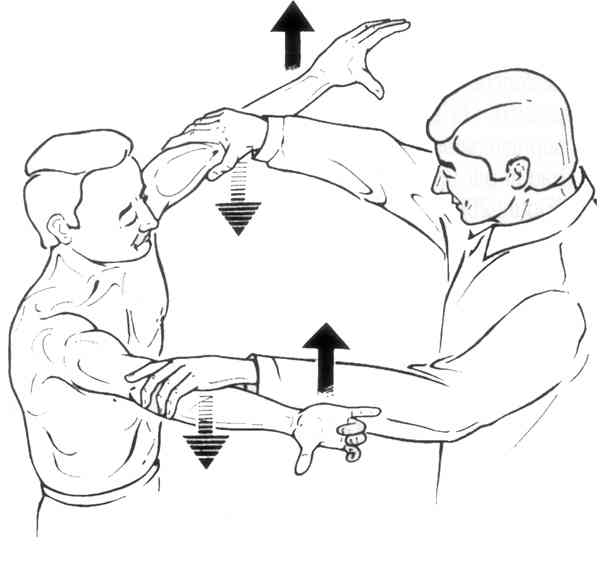 _758 Manoeuvre de Jobe
- le signe est positif en cas de diminution de la force
-
se recherche bras dans le plan de l’omoplate (30° vers l’avant) à 90° d’abduction, pouce vers le bas, en demandant au patient de résister à une pression descendante de l’examinateur
-
Infra-épineux et petit rond : la manœuvre de Patte :
-
l’examinateur se place derrière le patient, et demande à celui-ci d’effectuer une rotation externe contrariée en partant de la position RE2, bras à 90° d’abduction
- 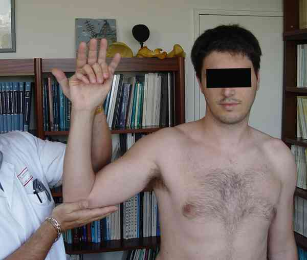 _759 Photo Manoeuvre de Patte
-
elle apprécie la force musculaire selon la cotation suivante :
- 5 : force musculaire normale et symétrique
- 4 : force musculaire diminuée
- 3 : RE2 contre pesanteur seulement
- 2 : pas de rotation externe active (clairon)
- 1 : contraction musculaire
- 0 : absence de contraction musculaire
-
2 autres signes permettent également d’évaluer la fonction de l’infra-épineux et du petit rond :
- le signe du clairon : en l’absence de rotateurs externes, pour porter la main à la bouche, le patient devra élever le coude au-dessus de l’horizontale, prenant ainsi la position d’un joueur de clairon
- le signe du portillon (ou retour automatique) : en l’absence de rotateurs externes, le patient ne pourra freiner le retour automatique de la main vers l’abdomen lorsque, partant d’une position en rotation externe coude au corps, l’examinateur lâche la main du patient. La main vient alors frapper l’abdomen
- le retour automatique peut aussi se rechercher en position RE2 ; il s’agit alors du Drop Sign
-
l’examinateur se place derrière le patient, et demande à celui-ci d’effectuer une rotation externe contrariée en partant de la position RE2, bras à 90° d’abduction
-
Sub-scapulaire :
-
la manœuvre de Gerber (ou lift-off test) :
- le patient passe la main dans le dos au niveau de la ceinture
-
il doit alors fermer le poing, décoller celui-ci de la ceinture et garder la position
- 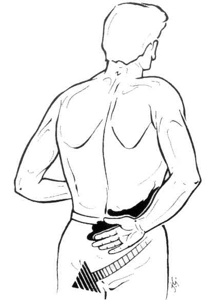 _760 Lift-off test de Gerber
- le signe est positif si le patient ne peut tenir la position
- une rotation interne douloureuse ou déficitaire rend impossible la réalisation de ce test. Il faut alors utiliser la manœuvre du belly-press test
-
le belly-press test :
- on demande au patient d’appuyer sur son ventre (belly) avec la paume de la main en décollant le coude du corps
-
s’il ramène le coude au corps, le test est positif signant l’atteinte du sub-scapulaire
- 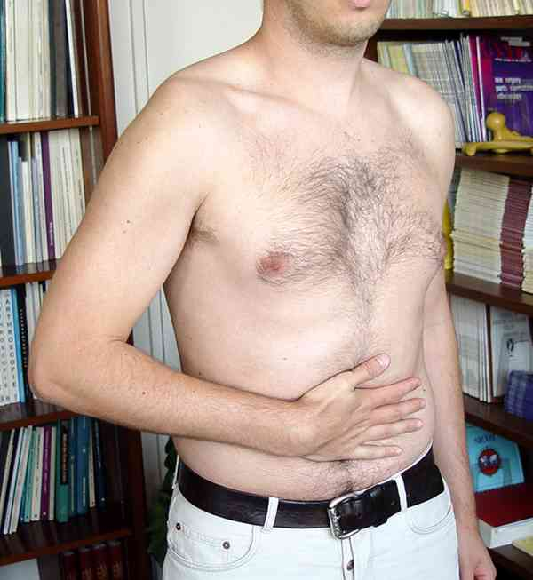 _761 Photo Belly-press test négatif
- 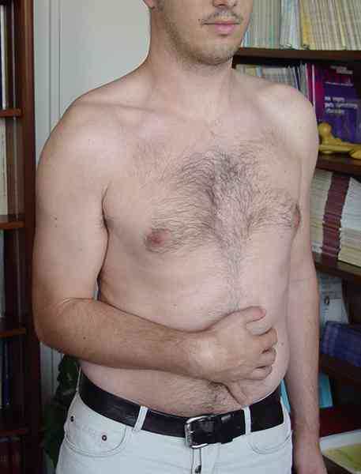 _762 Photo Belly-press test positif
- ce signe est parfois appelé signe de Napoléon
-
la manœuvre de Gerber (ou lift-off test) :
-
Chef long du biceps :
- de nombreux signes ont été décrits (palm-up test, test de Yergason…) ; aucun d’eux n’est spécifique d’une pathologie de la longue portion du biceps
- il faut par contre savoir rechercher une rupture de la longue portion du biceps ; patient face à l’examinateur, coude à 90° de flexion contrariée ; en cas de rupture, apparition d’une « boule » dans la partie basse du bras
Recherche d’une instabilité
-
Antérieure :
-
appréhension à l'armé du bras :
-
en partant de la position à 90° d’abduction, coude fléchi, le bras est progressivement emmené vers l’arrière. Au-delà d’un certain seuil, le patient résiste par crainte de voir se reproduire l’instabilité
- 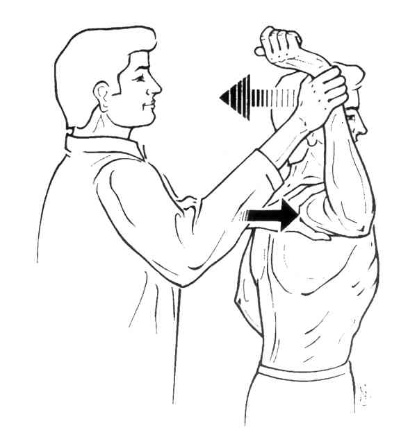 _763 Test de l'appréhension
-
en partant de la position à 90° d’abduction, coude fléchi, le bras est progressivement emmené vers l’arrière. Au-delà d’un certain seuil, le patient résiste par crainte de voir se reproduire l’instabilité
-
relocation Test ou test du recentrage :
- il s’agit de la recherche du même signe, mais sur un patient allongé
- au moment de la survenue de l’appréhension, l’examinateur imprime alors une translation antéro-postérieure sur la tête humérale (ce qui recentre l’articulation gléno-humérale)
- l’appréhension disparaît alors
-
appréhension à l'armé du bras :
-
Postérieure :
-
appréhension à la poussée vers l’arrière :
- une main bloque l’omoplate, l’autre imprime une poussée vers l’arrière sur le coude, bras à 90° d’élévation antérieure, en légère adduction et en rotation interne
- le signe est positif si l’on met en évidence un recul de la tête humérale ou une appréhension
-
appréhension à la poussée vers l’arrière :
Recherche d’une laxité
-
Tiroir antéro-postérieur :
- on bloque l’acromion entre pouce et index d’une main, la tête humérale entre pouce et index de l’autre main et l’on recherche l’existence d’un jeu dans l’articulation gléno-humérale
-
Sulcus sign ou signe du sillon :
- on essaie de « décoapter » l’articulation gléno-humérale par une traction sur le bras dans l’axe du corps, afin de créer un vide sous-acromial responsable d’un sillon
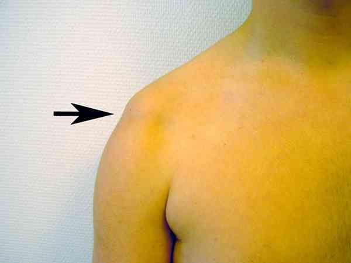 _764 Photo Sulcus sign ou signe du sillon
_914
- - -
Examen clinique de l'épaule
Auteur(s) : Jean-Jacques BANIHACHEMI, Dominique SARAGAGLIABibliographie